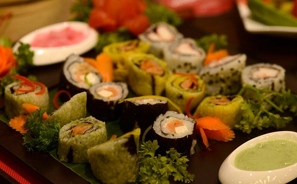

Sushi

Love me some Sushi
Sushi is traditionally made with medium-grain white rice, although it can also be prepared with brown rice or short-grain rice. It is commonly prepared with seafood, such as squid, eel, yellowtail, salmon, tuna or imitation crab meat. Certain types of sushi are vegetarian
Ingredients
- Sushi rice.
- Rice Wine Powder or Vinegar
- bamboo mat.
- soy sauce.
- Sriracha chili sauce
Steps
- Prep all of your ingredients. First things first, make your sushi rice ideally at least an hour or two in advance so that it has time to cool to room temperature before assembling your rolls
- Press the rice
- Add the fillings.
- Roll up the sushi
- Cut the sushi
- Drizzle and garnish
- Serve
Home